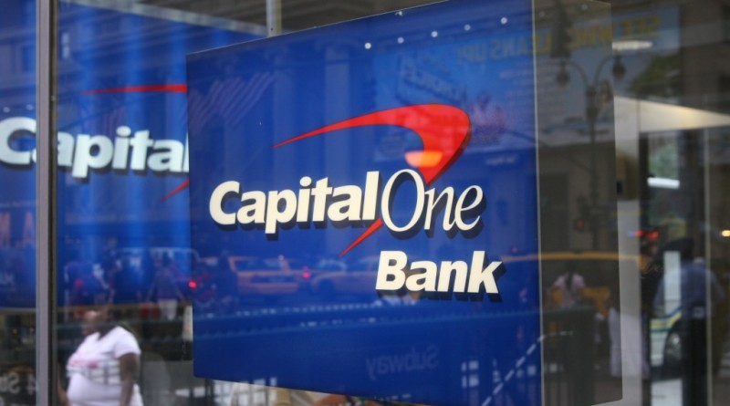

-
Worked 4 years at Capital One (HQ in Tysons Corner, VA) in various roles around Finance. Began in a rotational program, so experienced cost finance, credit analsis and backtesting, treasury data and automation, and finally ended in collateral.
- adaptability
- communication
- process

-
Four Year College in Richmond, VA
Studied Finance and Spanish. Captain and president of the club basketball team. Service fraternity, honors society, and maintaining 2 side jobs simulaneously.
- finance
- spanish
- leadership